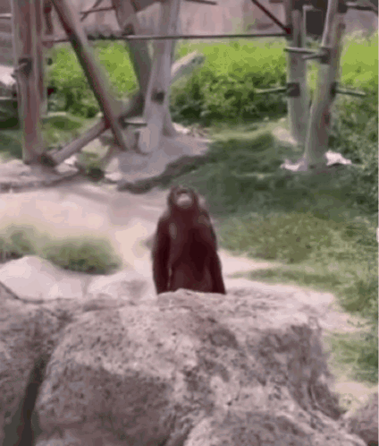

☕ CAFFEINE¶
Estimated time to read: 14 minutes
I had repeatedly tried to convince [a medical patient] to eliminate one particular habit that I knew was making her condition worse, a habit that often is not taken seriously and that can have an enormous impact on one’s health. This habit involves the abuse of a drug to which most people give little thought, even though it is now the most commonly abused drug on the planet. What was her habit? Excessive cola consumption. The drug? Caffeine.
...
I could not help thinking about her high caffeine intake—six or seven colas every day—and how likely it was that this chemical had contributed to her current health problems, including dehydration, an irregular heart condition, insomnia, and ostoporosis, each of which increased the seriousness of the situation.
— The Energy Drink Epidemic, By Thomas J. Boud, MD, Ensign 2008 December
As with other people whom I've named in pages of my notes, I intend to criticize ideas rather than individuals. I have reservations against this Ensign article, but nothing meaningful to say about Dr. Boud himself. I hope that is clear even if I wax poetic. He's got a doctorate education, and he is probably smarter than I am, though I can and will point to motivations behind this conclusion.
Dr. Boud describes negative side effects of caffeine, drawing from both anecdotal experience as a family medicine care provider and citing medical journals. He describes this patient and her myriad health complications, and in what I would call a baffling demonstration of expertise, ascribes them all to caffeine. For some reason, none of the other listed ingredients could be the culprit. "Natural flavorings" is such a broad, vague term, and if registered as a trade secret, you never have to tell anyone what it entails! Dr. Boud's patient couldn't be facing negative effects from, I don't know, the 39g * 7 cans = 273 grams of sugar every day. For those of us in 🇺🇸 God's 🗽 promised 🦅 land 🌎 that's 0.6 pounds of refined sugar via a beverage. For those who believe that the FDA can be trusted, we're looking at (140cal * 7 cans) ÷ 2,000 = 49% of recommended calorie intake just from soda.
... Nah, it's the caffeine. A fellow in 1833 determined that hot drinks are bad, and hot drinks naturally contain caffeine, therefore 175 years later, caffeine remains the only culpable ingredient to cause ill effects. We won't focus on aspartame or sugar, since those weren't alluded to by the prophet of the last dispensation.
I shouldn't be so harsh, I suppose. This perspective isn't exclusive to Mormonism. In 1911, the Coca-Cola company was sued for adding the awful, dangerous, harmful ingredient of caffeine to their flagship product to compensate for the removal of (trace amounts of) cocaine. I wonder if Dr. Boud has a worst-case scenario to use for illustration?
Unfortunately, there have also been deaths reported as a direct result of caffeine overdose.
Oh, good heavens, it can kill you? I see he's got a cited source attached to the notion of caffeine's lethal dosage. Let's take a look...
Lethal Dosage¶
See Sarah Kerrigan and Tania Lindsey, “Fatal Caffeine Overdose: Two Case Reports,” Forensic Science International, Oct. 4, 2005, 67–69.
— Footnote 7, The Energy Drink Epidemic
Right, so... The very title of this study has some red flags right from the start.
First, dear reader, you should know what a case study is (1, 2, 3). While anecdotal evidence is not entirely worthless, its sampling is too small to convey more meaning than "huh, look at that." Speaking of, another red flag that I see is that the sample size is two. Two.
It's been several years since I had to prepare an argumentative paper using authoritative citations, but I feel pretty confident that if I tried to make a point by citing two case reports, that would count heavily against a passing grade. No, it is not entirely worthless information. Should some folks feel motivated to find out more about the lethal dosage of caffeine, these two case reports would be their baseline reference point.
Rather than settle a conclusion just based on the title of the case report study, let's see if we can't actually find it to read more!
Fatal caffeine overdose: two case reports can be found in the national library of medicine, ScienceDirect, ProQuest. It is also cited in WikEm's Caffeine Toxicity entry.
The average cup of coffee or tea in the United States is reported to contain between 40 and 150mg caffeine although specialty coffees may contain much higher doses. ... Caffeine overdoses in adults are rare and typically require ingestion in excess of 5g.
— Abstract for Fatal caffeine overdose: two case reports
Five grams of caffeine is when it becomes problematic? Goodness. That's... wait, hang on... at a low estimate of 50mg of caffeine per cup, that's going to be around fifty cups of coffee. That's... (8oz * 50 = 400oz) ÷ 128oz = 3.125 three fucking gallons of coffee before caffeine becomes a considerable risk. The case reports find that an overdose requires an "excess of 5g." After your third gallon, you'd need to keep slamming it down.
I think coffee is tasty. It makes my brain go 'woosh'. After reaching my threshold of four to five cups, my brain 'wooshes' too much and prevents me from sleeping deeply, and it makes my tummy feel gross. So what do I do about it? I stop drinking coffee before reaching that threshold. I stop at two to four cups. I have never felt a desire to down fifty cups or three gallons of coffee in a day, and I do not need revelation from God to tell me to stop ingesting a substance after it shows diminishing returns. I will posit that you don't need that either.
What findings were in these two case reports?
Over a period of approximately 12 months our office reported two cases of fatal caffeine intoxication. In the first case, the femoral blood of a 39-year-old female with a history of intravenous drug use contained 192mg/L caffeine. In the second case, femoral blood from a 29-year-old male with a history of obesity and diabetes contained 567mg/L caffeine. In both cases, the cause of death was ruled as caffeine intoxication and the manner of death was accidental.
— Abstract for Fatal caffeine overdose: two case reports
One case is someone injecting an unspecified drug to her bloodstream intravenously. The other case has a "history of obesity and diabetes" with an alarmingly high caffeine content in femoral blood.

Dr. Boud, what are you trying to demonstrate by citing two case reports??? "Don't drink three gallons of coffee"? Does anyone really need divine revelation to tell us that?
This demonstrates the need for a sample size higher than two. The case reports would be a foundation or basis for producing, say, a double-blind study that will contain statistical significance, which study could then be used as a more confident citation when making the claim that deaths are "a direct result of caffeine overdose." A larger sample size would preclude confounding factors, like, I don't know, obesity, diabetes, or intravenous drug use. Surely Dr. Boud knows about comorbidity per his education and discipline. I would be alarmed if he didn't. Let's not forget that we're here because of an Ensign magazine article, bringing us scientific data to justify the Word of Wisdom, because Joseph Smith cannot be wrong about anything ever.
If the Word of Wisdom was meant to help us avoid the lethal dose of caffeine (as identified in 2005 by two case reports) then don't you think God would have been more clear than "hot drinks"? If 5g of caffeine is the point where it becomes problematic, wouldn't one of the subsequent fifteen prophets of God be able to identify that?
You could also overdose on vitamins (1, 2, 3), acetaminophen, nutmeg (1, 2), capsaicin, sucrose, and salt (1, 2, 3). Oddly enough, since many of those things aren't naturally found in "hot drinks," I haven't found any Ensign articles warning us against spicy peppers that could kill you.
Don't drink hot drinks = Don't intravenously inject caffeine if you're diabetic
Very cool, thanks God 👍
High Dosage¶
Initial doses of caffeine can yield increased athletic performance, energy, alertness, and heart rate. High doses of caffeine can yield muscle twitching, anxiety/nervousness, irritability/rage, acid reflux, insomnia, hypertension, and diuresis.
As caffeine begins to wear off, effects can include rebound headaches, sluggishness, fatigue, light-headedness, and depression. These crash effects often motivate users to increase caffeine consumption, and the cycle repeats.
— Heading Caffeine Abuse Cycle, The Energy Drink Epidemic; Ensign, 2008 December
I can think of a few very manageable solutions to this abuse cycle: don't take high doses of caffeine. If one finds themselves caught in this cycle, either taper off or take a recovery day. Find your body's limit and don't exceed it. Make some "half-caff" if you must.
Caffeine is fine, but like any other chemical substance on earth, one can feasibly take too much of it... so don't take too much of it. In responsible parameters, it's harmless.
I find it so irritating that the LDS church will vehemently fixate on this one factor of what's in a "hot drink" so that Joseph Smith doesn't look like an absolute clown 200 years later. They'll do anything to avoid admitting wrongdoing or a mistake.
Other Sources¶
It would be dishonest of me to cherry-pick only one source to criticize this article when there are a total of eight citations. Do others say anything noteworthy?
Well, because we live in a capitalistic hellscape, knowledge and information can be kept behind a paywall. So it is with the cited New England Journal of Medicine. In Dr. Boud's Ensign article, he cites two studies from the NEJM which I could read via subscription for as little as $180 USD. Not even the full abstract is available to me without paying. Maybe someone smarter than me could explain why scientific studies are performed for the betterment of humankind, and then gatekept away from humankind?
As much as I would like to examine these studies, I'm not willing to drop $180 to find out if I could outwit a cited medical doctor who is board certified in neonatal-perinatal medicine and his commentary On the Caffeination of Prematurity (archive). I just don't think that would end well for me, irrespective of publication year. I suppose I can't meaningfully comment on the validity of this source, nor Dr. Boud's claim that caffeine has a detrimental effect on babies' growth. It's likely safe to take his claim at face value. So... don't give Red Bull to your baby, I guess.
Of the cited sources that don't lead me to a paywall is a curious anomaly of citing an Ensign article from 1988, Caffeine—The Subtle Addiction. That there is a twenty-year gap, and I feel confident that citing a religious magazine for an empirical claim would not bode well in any academic setting. Fortunately for us, these Ensign articles are not in an academic setting. Fortunately for me specifically, my notes are also not an academic setting. The 1988 article cites more studies performed as early as 1979, excluding a quote from McConkie's 1966 Mormon Doctrine.
Today, I'm not sure how badly I want to track down those cited studies for entertainment purposes. I may revisit this later, but I feel satisfied to have gained as much amusement as I can from Dr. Boud's 2008 Ensign article. Energy drinks are bad for infants. Who knew? Thankfully, God knew, and told Joseph back in 1833.
Kind of.
SODA¶
- BYU selling caffeinated soft drinks on campus, Deseret News (archive)
- 'A historic day:' BYU sells caffeinated soda for 1st time since 1950s, KSL (archive)
- Caffeinated soda now for sale at BYU-Idaho, East Idaho News (archive)
- For The First Time In Decades, Caffeinated Sodas On Sale At BYU Dining Halls, NPR (archive)
- BYU will now sell caffeinated soda on campus, The Daily Universe (archive)
- BYU Now Sells Caffeinated Soda On Campus and People Are Freaking Out, TIME (archive)
- Mormon Brigham Young University lifts ban on caffeinated soda sales, CBS News (archive)
- Brigham Young University ends Mormon ban on caffeinated soda, BBC (archive)
- Holy Brigham Young (University)! Caffeinated sodas allowed on Mormon church school’s campus, Salt Lake Tribune (archive)
Look... There's nine independent sources all marveling over an accredited university's decision to allow their students to consume caffeine. What implications does this carry? Why would anyone in the world get excited over this? Why did the university ban this soft drink additive for sixty years? It being banned "in the mid-1950's" is as specific of information as I've been able to find. I think this is a prime example of how policy, doctrine and culture intersect. Presumably, caffeine was allowed before "the mid-1950's," but was explicitly forbidden... and then reverted.
No, I'm not suggesting that "the director of BYU Food Services" is a prophet, nor that this arbitration was divinely inspired. However, I am absolutely making the case that how a doctrine is implemented or understood is an important factor. This would not have happened if the Word of Wisdom was specific and clear, yet it's vague enough for "hot drinks" to include an icy Mountain Dew. I defy you to identify some other scenario where those two would be counted as equal, or even comparable.